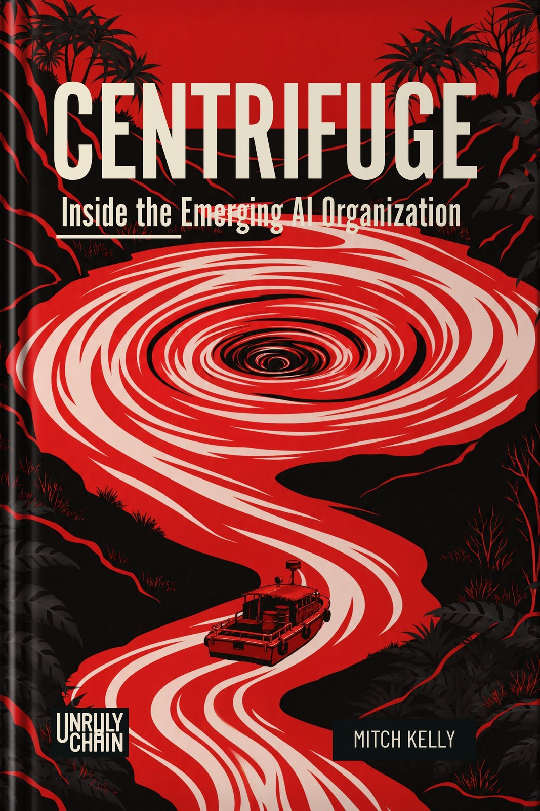

Centrifuge
AI does not merely make organizations faster. It exposes what they actually are.

About the book
The emerging AI organization
Centrifuge argues that AI does not transform organizations merely by making existing work faster. It applies force. Under that force, authority, judgment, memory, capability, and accountability separate from the structures that once held them together.
That separation exposes what an organization actually knows, where decisions really happen, which roles create value, and which existed because coordination used to be expensive. The emerging AI organization is not simply more productive. It can require less organization to carry the same capability.
As execution becomes abundant, scarcity moves. Judgment, taste, direction, context, and the willingness to own a decision become more valuable, not less.
Publishing September 2026. This page will become the permanent companion to the book, with references, corrections, and selected resources added after publication.
AI as centrifuge
AI applies force that reveals differences already present. It does not create an organization’s fractures; it makes them visible.
Capability moves
Tools increasingly carry capabilities once assembled across roles, teams, and layers. That changes how much organization is required to act.
Scarcity moves too
As execution becomes abundant, judgment, taste, direction, context, and accountability become the differentiators.